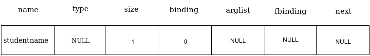

Data Structures
Download as PDF
Type Table
The Type Table stores all necessary information regarding the various user defined types in the source program. The compiler creates an entry in the Type Table for each user defined type. In addition to this, there are default entries created for primitive types (int, str) and special entries null, boolean and void for the internal purposes of the interpreter. The default and special entries are made beforehand whereas entries for user defined types are made as the Type Declaration Section of the source code is parsed.
Structure
The following structure can implement a Type Table:
The fields is the pointer to the head of Fieldlist. Fieldlist stores the information regarding the different fields in case case of the user-defined type.
Associated Methods
- void TypeTableCreate() : Function to initialise the type table entries with primitive types(int,str) and internal data types(boolean,null,void)
- struct Typetable* TLookup(char *name) : Returns pointer to type table entry of type name
- struct Typetable* TInstall(char *name,struct Fieldlist *fields) : Creates a type table entry for the type of name with given fields and returns the pointer to the type table entry.
- void FInstall(char *name,struct Typetable *type) : Creates a fieldlist entry with given name and type.
- struct Fieldlist* FLookup(char *name, struct Fieldlist *list) : Searches for a field of given name in the given list and returns a pointer to the matching entry.
Illustration
Let us consider the sample code
- The type table is first created and initialised to contain the default entries for eachof the primitive and internal datatypes. This is done through a call to the function TypeTableCreate() from main function before yyparse() is called to start parsing the code. After the execution of TypeTableCreate() , the type table will be as follows:

- Now yyparse() is invoked. As soon as a new type name is seen, it is installed into the table and the fields are later on attached to the type table entry after the complete parsing of type's fields, i.e, in case of the user-defined type linkedlist, as soon as name linkedlist is encountered, a type table entry with name linkedlist and fields NULL is created. Later on after finishing the complete parse of the type definition ( on completing the parse till line number 5 in the example typetable_illustaration), the pointer to head of fieldlist is formed and it is attached to type table entry. NOTE : A type table entry is created just as the type name is seen, because a field of the type may be of same type, just like next is of type linkedlist in the type definition of linkedlist. When the fieldlist is created the type of the field is looked up and pointed to type table entry.

- Similar actions are carried out for user-defined type marklist also.

- Once the type declaration section is completely parsed, the Type Table is fully created and will not be further modified or updated.
Symbol Tables
Symbol Tables are maintained by the compiler to store all necessary information regarding the variables used in the source program. Global Symbol Table and Local Symbol Table are the two symbol tables.
Global Symbol Table
The information regarding the global variables is stored in the Global Symbol table.
Structure
The structure of Global Symbol Table(GST) is as follows:
Argstruct is used to store all the necessary information regarding the arguments. The ArgStruct has the following structure. More about ASTNode here.
Associated Methods
- struct Gsymbol* GInstall(char *name,struct Typetable *type, int size, struct ArgStruct *arglist) : Creates a Global Symbol object of given name,type,size and argument list and assigns a binding to the variable.
- struct Gsymbol* GLookup(char *name) : Searches for a GST entry with the given name, if exists, returns pointer to GST entry else return NULL.
- void AddGType(struct Typetable *type,struct Gsymbol *g) : Sets the type of GST entry g with given type.
- void GAppend(struct Gsymbol *g) : appends the global symbol entry to the GST only if there doesn't exists a variable in GST with the same name of global symbol g.
Illustration
Continuing with earlier example, let's add Global declaration section to it.
Each declaration in ExpL is of the form
type id1,id2,...idn;
The context free grammar of this can be written as
1. Declaration ← type id_list ;
2. type ← int | str | id //id here is for user-defined types
3. id_list ← id | id_list , id
- When a declaration is parsed, firstly, the ids are reduced to a list,here non-terminal id_list by rule 3 and different types are reduced to the non-terminal type by rule 2. The type of each variable is obtained only by rule 1 which happens after the reductions by rules 2 and 3. So as soon as a variable is encountered, it is reduced to id_list and a Global Symbol object is created for the variable with type as NULL as shown below.
 -
Once the type reduction at rule 1 happens, the type of Gsymbol table objects in id_list are set with type as obtained from the rule 1 RHS and the global symbol objects are attached to the Global Symbol Table.

-
Similarly for int rollno,average,findaverage(linkedlist marks), the id_list with type NULL is formed first. NOTE : Before the Global Symbol object is created according to a function declaration, the argument list is already formed with the names and types set. Check the grammar for function definitions here.The fbinding for a function is the abstract syntax tree of the function definition and is set only after complete parsing of the function definition.

- After this, the types for rollno,average and findaverage will be set and these objects are appended to the global symbol table. The steps for linkedlist studentmarks are also the same and the final Global Symbol table looks as follows.

Local Symbol Table
The information regarding the local variables is stored in the Local Symbol table(LST). Each function has its own list of local variables. So each function has its own LST.
Structure
Associated methods
- struct Lsymbol* LInstall(char *name,struct Typetable *type) : Creates a local symbol object with given name and type and also sets its binding.
- struct Lsymbol* LLookup(char *name) : searched the LST and if an entry with given name is found ,return the entry,else returns NULL.
- struct Lsymbol* AddLType(struct Typetable *type, struct Lsymbol *l) : Sets the type of l with given type.
- void LAppend(struct Lsymbol *l) : Appends the list l to the LST.
Arrays cannot be local variables, so we don't need to store the size of a variables. Also nested functions are not allowed in ExpL, so we don't require fbinding and arglist as in Gsymbol. The LST is formed for the Local Declaration Section in the same way GST was created for the Global declaration section. Every function has its own LST. Every function has a global symbol table entry, which has an fbinding ASTNode and ASTNode has the field Lentry. This Lentry is the pointer to the Local Symbol Table of the function. Read more about ASTNode here
Memory is allocated for local variables from a seperate area called stack. Hence, the binding for a local variable is the relative address of the variable with respect to the function Base Pointer. The binding is always added to the Base Pointer to obtain the absolute address of variable in stack. Hence the binding value starts from 1.This will be explained in detail later.
Abstract Syntax Tree
The front-end of a compiler constructs an intermediate representation of the source program from which the back-end of generates the target program. The intermediate representation we will use here is the Abstract Syntax Tree(AST). During parsing, the AST nodes are created to represent significant programming constructs. An analysis proceeds and information is added to nodes in the form of attributes associated with the node. Once the AST is constructed, the execution phase reduces to evaluating the AST. Following is the node structure we use.
The union Constant we use here has fields of two fields intval and strval for interger and string constants respectively as the language supports only the primitive types int and str.
Associated methods
- struct ASTNode* TreeCreate(struct Typetable *type,int nodetype,char *name,union Constant value,struct ASTNode *ptr1, struct ASTNode *ptr2,struct ASTNode *ptr3) : Creates a node with the appropriate fields set to the corresponding parameters after type checks(will be explained later) and returns it.
- struct valstruct* interpret(struct ASTNode *t) : evaluates (interprets) the AST with root t and returns the evaluated result. Since the result may be an integer, string or a the pointer to a memory location (indicated here as the index in the array that simulates memory) So we make use of the following structure valstruct:
Illustration
RUN TIME DATA STRUCTURES
A compiler must accurately implement the abstractions embodied in the source language definition. Names,scope, bindings, data types, operators, flow-control constructs are some of the abstractions. Compiler creates and manages a run-time environment in which a variety of issues such as allocation of storage locations for the objects named in the source program, the linkages between procedures, the mechanisms for passing parameters.From the perspective of compiler writer, the executing target program has its own logical address space in which each program value has its location. Following is the representation of run-time memory.

Stack and heap are dynamic, their size changes as the program executes. We will discuss these structures in detail.
Stack
The stack is used to store data structures called activation records that are generated during procedure calls.An activation record is used to store the information such as value of program counter and machine registers when a function call occurs. When control of returns from the function call, the activation of the calling procedure can be restarted after restoring the relevant registers and setting program counter to the point immediately after the call. Also, data of objects whose lifetime are contained in that of an activation can be allocated on the stack along with other information associated with activation.
Structure
So, for the implementation of the interpreter, we create a stack which is an array of memstruct. Memstruct has the following structure. NOTE : for compiler, the stack structure and functions supported functions depends and is taken care of by the target machine.
Associated methods
- void push(struct valstruct *v) : pushes the values in valstruct to stack accordingly.
- struct valstruct* pop() : pops a value on top of the stack as a valstruct.
- void load(struct memstruct *m, struct valstruct *v) : loads the values in stack location pointed by m to the value structure v
- void store(struct memstruct *m,struct valstruct *v) : stores the values in value structure v to the stack location pointed by m.
NOTE : valstruct and memstruct structures have been used here to keep the fine line between a value object and a object in the memory.
Heap
A storage allocation decision can be static or dynamic. A decision is dynamic if it can be decided only while the program executes. In simple terms, consider the previous example, the size of the linkedlist marks is not known at the compile time, its size is only known at the run-time when we read in the count of subjects.
Here, for interpreter, for heap we will be using an memstruct array of size 1024.
Associated methods
- int alloc(int size) : allocates continuos locations of given size and returns the starting address of allocated block.
- int free(int addr) : frees the memory block starting with the given addr are erasing the data in that block and returns a value indicating the success and failure of free operation.
Allocation algorithms
The two types of allocation-deallocation algorithms we will discuss here for heap management are fixed memory and buddy memory management.